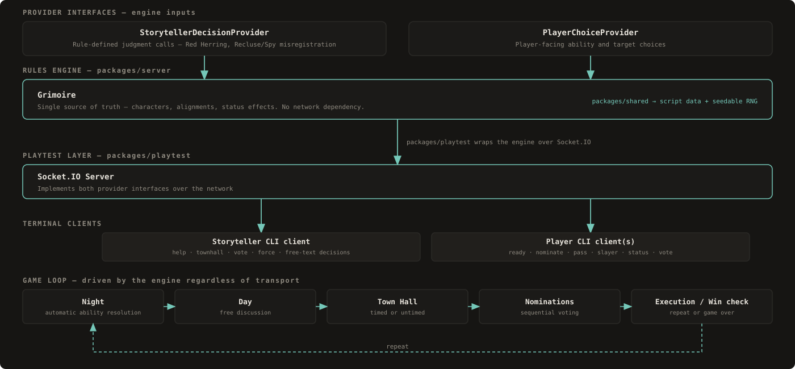

Blood on the Clocktower Companion
A rules engine and terminal-based multiplayer playtester for Blood on the Clocktower — the automated Storyteller and web client are still to come.
Problem
Blood on the Clocktower runs entirely on a human Storyteller correctly tracking the Grimoire — every player's true character, alignment and status effects — and adjudicating characters that misregister, get poisoned, or go drunk against each other, live at the table. A single missed interaction among the Trouble Brewing script's 13 characters can go unnoticed until it changes who wins.
The question was whether that ruleset could be captured in code precisely enough to adjudicate a full game correctly — a prerequisite for eventually taking the judgment calls, not just the bookkeeping, off a human Storyteller.
Approach
The project is built headless-engine-first: the rules engine is plain TypeScript with no networking dependency at all, so night order, ability resolution and win conditions can be unit- and simulation-tested in isolation before any client exists. Only once that was trustworthy did a Socket.IO server and terminal CLI clients get layered on top, as a local multiplayer playtest tool — structured with the same rooms, reconnection primitives and event model a networked production client would need, rather than a throwaway harness.
Script and character data, shared types, and a seedable RNG used by both the engine and the playtest layer.
- Trouble Brewing script data
- Seedable RNG for reproducible test runs
The rules engine itself — Grimoire state plus the two decision-provider interfaces, with zero network code.
- Night order, ability resolution, win conditions
- Fully unit- and simulation-tested in isolation
Wraps the engine in a Socket.IO server and terminal CLI clients for real local multiplayer games.
- Storyteller + per-player terminal clients
- Rooms/reconnection primitives matching production shape
Architecture

The engine's only inputs are two interfaces. StorytellerDecisionProvider handles rule-defined judgment calls — selecting the Fortune Teller's Red Herring, resolving Recluse/Spy misregistration. PlayerChoiceProvider manages player-facing ability and target choices. Both sit in front of the Grimoire, the single source of truth for every player's character, alignment and status effects. Because neither interface implies a transport, the engine can be driven entirely from test code.
The playtest layer wraps that engine in a Socket.IO server, implementing both provider interfaces over the network instead of in-memory, and talks to terminal CLI clients — one for the Storyteller, one per player. A game runs the same phase loop regardless of transport: Night (automatic) → Day (free discussion) → Town Hall (timed or untimed) → Nominations (sequential voting) → execution and win-condition check, then repeat.
Key decisions and tradeoffs
Provable correctness shouldn't depend on sockets or timing. The rules engine has zero network dependency, so night order, ability resolution and win conditions can be unit-tested in isolation before any client — networked or terminal — exists.
13 interacting characters — misregistration, poison, drunk — create combinatorial edge cases that are hard to enumerate by hand. Running 30 randomized full games across 6 player counts and 5 seeds each catches interaction bugs unit tests alone would miss.
The engine diverges from tabletop rules in two places — no per-day nomination cap, and Minions aren't automatically informed of the Demon's identity. Both are flagged explicitly in code comments and docs rather than left as an unstated gap.
The Socket.IO server and CLI clients are built with the same rooms, reconnection primitives and event model a networked production client would need, so today's playtest tool exercises the same seams a real client eventually will, instead of a one-off test rig.
Splitting shared, server and playtest into separate workspace packages keeps the rules engine dependency-free and independently testable from the transport layer that wraps it.
Outcome
The Trouble Brewing engine — 13 characters — is complete and covered by 93 tests, including 30 randomized full-game simulations across 6 player counts and 5 seeds each; the local multiplayer playtest tool is fully functional end-to-end, so a real table can play a game with engine-enforced rules today. What isn't built yet: any web or mobile player client (terminal only, for now) and a fully automated Storyteller — a human still makes the discretionary calls through StorytellerDecisionProvider. Next up, in priority order: a player-facing web/mobile client, then full Storyteller automation, reconnection support, and additional scripts beyond Trouble Brewing. Code is MIT-licensed; this is an unofficial, non-commercial fan project with no affiliation to Blood on the Clocktower's creators.